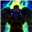

他的下次攻击将打击敌人的要害部位，造成额外伤害并将目标沉默。

他也可以激活这个技能来暂时获得一层护盾和韧性，
并在接下来的较长持续时间里获得较弱的伤害减免效果。


| 技能 | 触发 | 技能属性 | 技能效果 | 图标 |
| 坚韧 | 被动 | 如果盖伦近期没有受到伤害或者被敌方技能命中，那么他会每秒回复若干百分比的总生命值。 |  | |
| 致命打击 | Q | 冷却时间：8 |
盖伦的移动速度获得爆发性提升，同时移除身上的所有减速效果。 他的下次攻击将打击敌人的要害部位，造成额外伤害并将目标沉默。 |
|
| 勇气 | W | 冷却时间：24/23/22/21/20 |
盖伦被动地通过击杀敌人来提升护甲和魔法抗性。 他也可以激活这个技能来暂时获得一层护盾和韧性， 并在接下来的较长持续时间里获得较弱的伤害减免效果。 |
|
| 审判 | E | 冷却时间：9 | 盖伦快速地旋转身体挥舞大剑，并对邻近敌人造成物理伤害。 |
|
| 德玛西亚正义 | R | 冷却时间：120/100/80 | 盖伦召唤德玛西亚之力，试图处决一名敌方英雄。 |
|